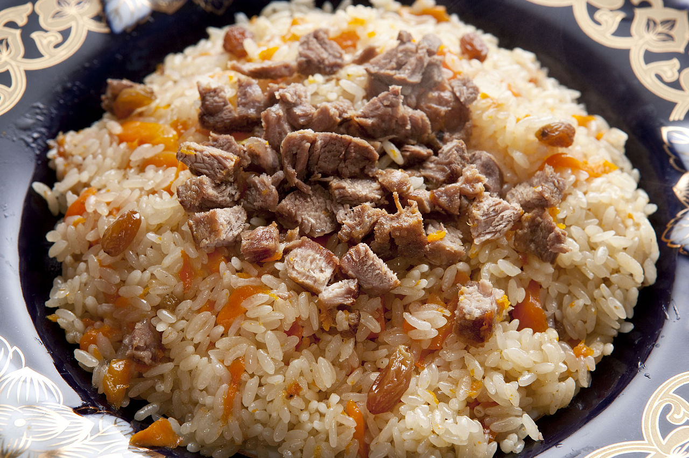
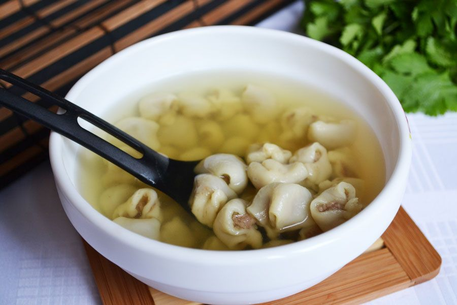
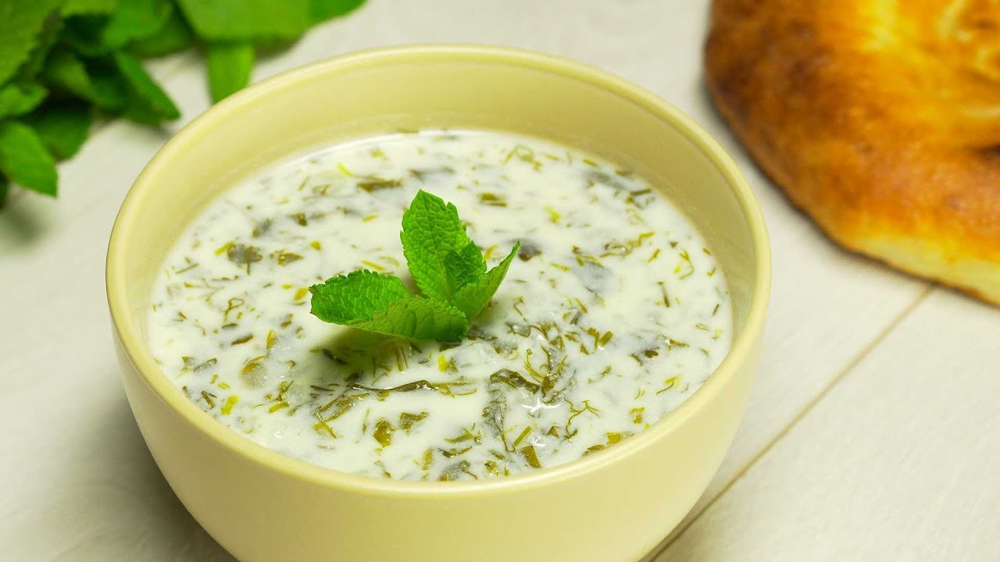
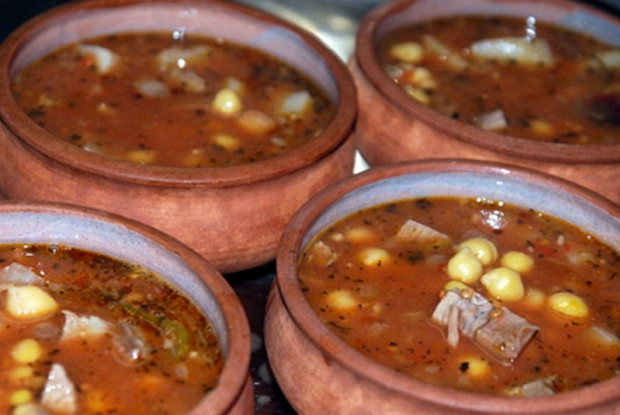
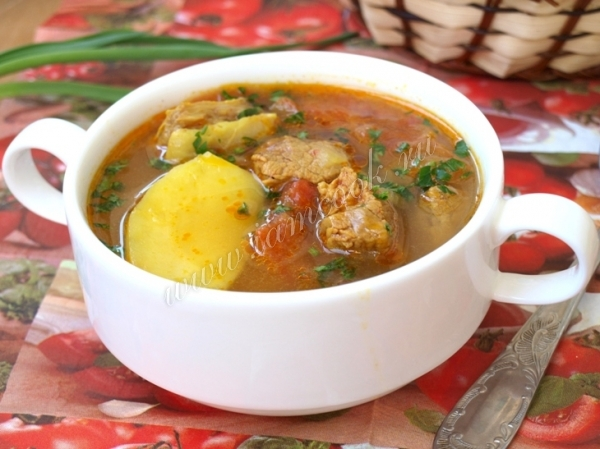
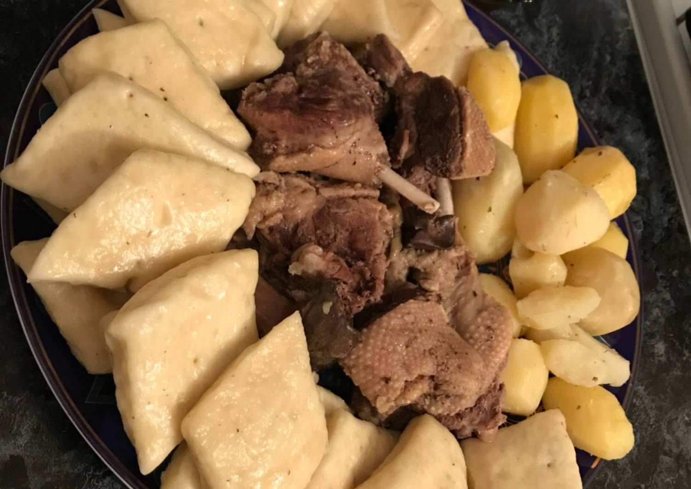
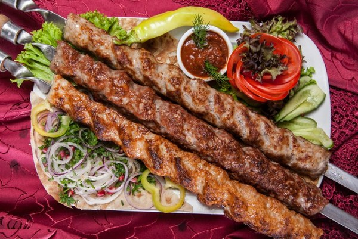
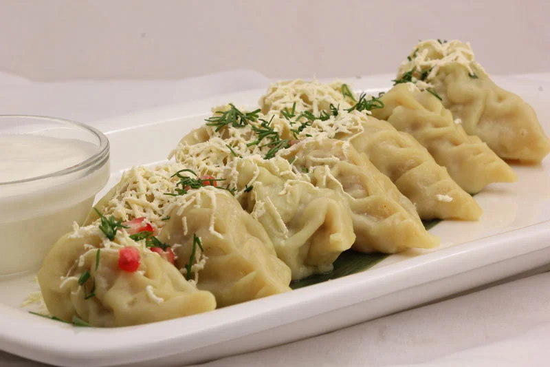

____
Традиционная еда
Плов — блюдо восточной кухни, основу которого составляет варёный рис (в исключительных случаях другая крупа или мелкие макаронные изделия). Отличительным свойством плова является его рассыпчатость, достигаемая соблюдением технологии приготовления риса и добавлением в плов животного или растительного жира, препятствующего слипанию крупинок.

Дюшбара — это блюдо азербайджанской кухни, которое представляет собой наваристый бульон с маленькими пельмешками обильно сдобренные специями и зеленью. Чтобы его приготовить, конечно, придется повозиться и затратить немало времени, но это стоит того.

Долма — блюдо, представляющее собой начинённые овощи или листья (как правило, виноградные), голубцы в виноградных листьях. Начинка обычно готовится на основе риса, может также содержать отварной мясной фарш. Долма широко распространена в кухнях народов Закавказья, Балканского полуострова, Передней и Центральной Азии, а также Северной Африки.

Довга — кисломолочный суп азербайджанской кухни. Довгу можно есть как горячей, так и холодной.

Пити — азербайджанский национальный суп из баранины (грудинки), приготавливаемый в глиняной закрытой посуде на углях.

Бозбаш — блюдо, распространённое на Кавказе в виде заправочного супа на основе бульона из баранины. От других заправочных супов отличается обязательными ингредиентами в виде нута (он же турецкий горох, бараний горох, нохут, нат) и каштанов (последние допускается заменять картофелем).

Хинкал — традиционное блюдо кавказской кухни, одно из наиболее популярных и в наши дни. Представляет собой вареные в мясном бульоне кусочки теста (собственно «хинкалины»), подаваемые с бульоном, варёным мясом и соусом.

Люля-кебаб — блюдо кухонь разных стран ближнего востока в виде мясного фарша, нанизанного на шампур и зажаренного на углях. Под разными названиями это блюдо известно многим народам от Балкан до Ирана.

Кюрза — вечнозеленое дерево, чьи плоды растут прямо на стволе. Из них делают соки, мармелад, желе и даже вино.

____